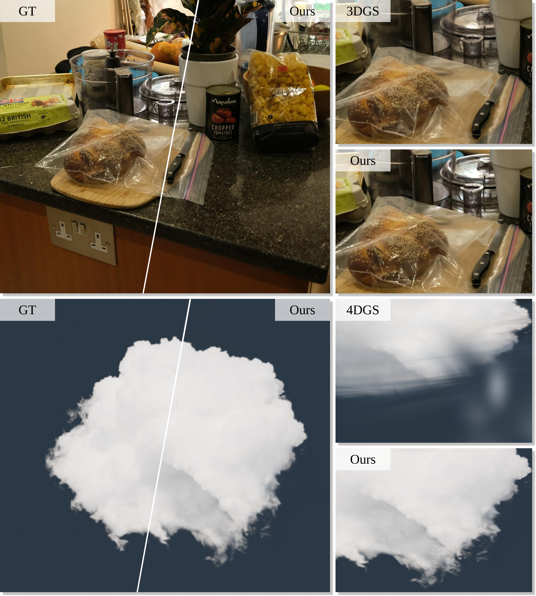
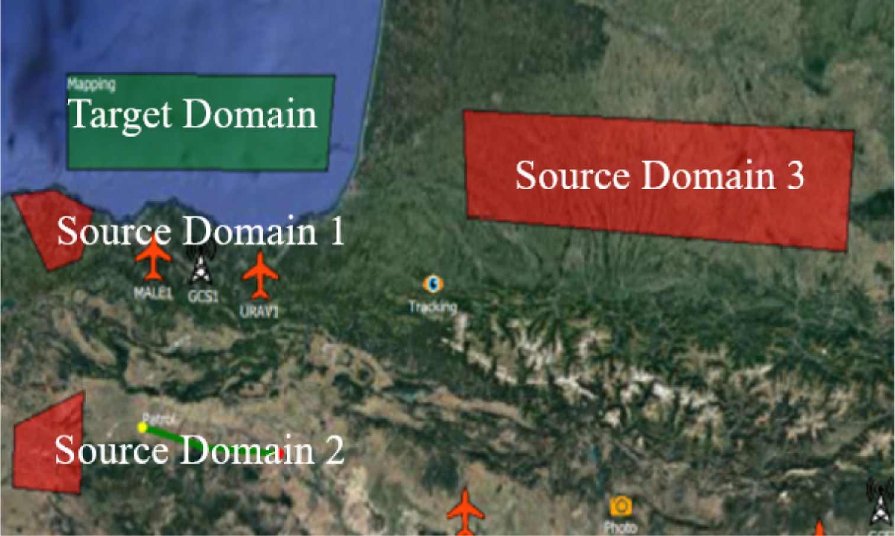
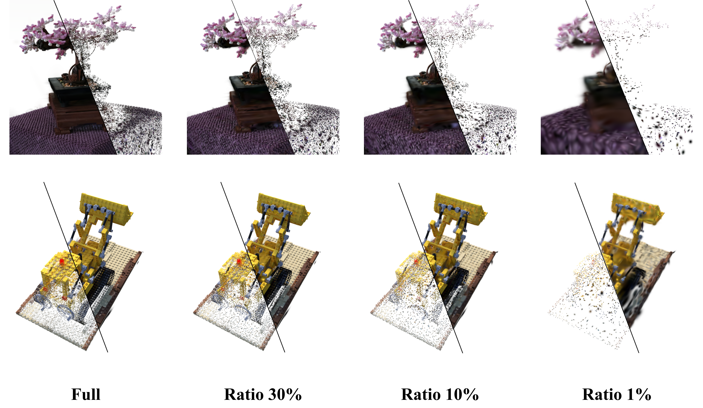

Selected Publications

Universal Beta Splatting
Rong Liu, Zhongpai Gao, Benjamin Planche, Meida Chen, Van Nguyen Nguyen, Meng Zheng, Anwesa Choudhuri, Terrence Chen, Yue Wang, Andrew Feng, Ziyan Wu
ICLR 2026
Universal Beta Splatting generalizes 3D Gaussian Splatting to N-dimensional anisotropic Beta kernels, enabling controllable dependency modeling across spatial, angular, and temporal dimensions within a single representation.
Splat Feature Solver
Butian Xiong, Rong Liu, Kenneth Xu, Meida Chen, Andrew Feng
ICLR 2026
A unified, kernel- and feature-agnostic framework that formulates feature lifting as a sparse linear inverse problem, enabling efficient closed-form solutions with high-quality 3D semantic features.
Deformable Beta Splatting
Rong Liu*, Dylan Sun*, Meida Chen, Yue Wang†, Andrew Feng†
SIGGRAPH 2025
Deformable Beta Splatting introduces deformable Beta Kernels with adaptive frequency control for both geometry and color encoding, capturing complex geometries and lighting while only using 45% parameters and rendering 1.5x faster than 3DGS-MCMC.
SplatMAP: Online Dense Monocular SLAM with 3D Gaussian Splatting
Yue Hu, Rong Liu, Meida Chen, Peter Beerel, Andrew Feng
I3D 2025
A real-time monocular SLAM system that fuses 3D Gaussian Splatting with SLAM’s dynamic depth and pose updates via SLAM-Informed Adaptive Densification and Geometry-Guided Optimization.
AtomGS: Atomizing Gaussian Splatting for High-Fidelity Radiance Field
Rong Liu, Rui Xu, Yue Hu, Meida Chen, Andrew Feng
BMVC 2024
AtomGS proposes an atomized proliferation of Gaussians and edge-aware normal loss to refine Gaussian splatting, boosting geometric precision and rendering fidelity in novel-view synthesis.
Website | Paper | Code | GS Monitor | Poster

UAV swarm based radar signal sorting via multi-source data fusion: A deep transfer learning framework
Liangtian Wan, Rong Liu, Lu Sun, Hansong Nie, Xianpeng Wang
Information Fusion. 78 (2022): 90-101
A UAV-swarm–enabled deep transfer learning framework that fuses radar pulses across time and space to accurately classify and sort complex radar signals.
Preprints

NanoGS: Training-Free Gaussian Splat Simplification
Butian Xiong*, Rong Liu*, Tiantian Zhou, Meida Chen, Zhiwen Fan, Andrew Feng
arXiv:2603.16103
NanoGS is a training-free framework for Gaussian Splat simplification, which achieves substantial simplification ratios while preserving fidelity and geometry without post-optimization or calibrated images.
Website | Paper | Web App | Code (Web) | Code (Python)
Universal Photorealistic Style Transfer: A Lightweight and Adaptive Approach
Rong Liu, Enyu Zhao, Zhiyuan Liu, Andrew Feng, Scott John Easley
arXiv:2309.10011
A lightweight style transfer network that learns instance-adaptive photorealistic transfer on-the-fly and scales effortlessly to high-resolution images and videos.
Experiences
Research Engineer
May 2024 - PresentSupervisor: Prof. Andrew Feng
USC Institute for Creative Technologies
Supervisor: Prof. Andrew FengMay 2024 - Present
- Deformable Beta Splatting
- SplatMAP: Online Dense Monocular SLAM with 3D Gaussian Splatting
- Splat Feature Solver
Research Intern
June 2025 - August 2025Supervisor: Dr. Zhongpai Gao
United Imaging Intelligence
Supervisor: Dr. Zhongpai GaoJune 2025 - August 2025
- Universal Beta Splatting
- Radiance fields on medical data
Research Assistant
May 2023 - May 2024Supervisor: Prof. Andrew Feng
USC Institute for Creative Technologies
Supervisor: Prof. Andrew FengMay 2023 - May 2024
- Neural Radiance Fields (NeRF)
- Scalable NeRF on large terrain datasets
- 3D Gaussian Splatting
- Atomizing Gaussian Splatting for High-Fidelity Radiance Field
- Mesh extraction from Radiance Field
Research Assistant
July 2020 - July 2022Supervisor: Prof. Liangtian Wan
Dalian University of Technology
Supervisor: Prof. Liangtian WanJuly 2020 - July 2022
- Objective Detection (RCNN and YOLO)
- Transfer Learning
Teaching Assistant
September 2021 - June 2022Dalian University of Technology
September 2021 - June 2022
- Program Design Basics and C Programming
- Object-Oriented Method and C++ Program Design
Awards
-
Computer Science Master’s Student Honors Merit - University of Southern California (USC), 2024
-
DUT Outstanding Undergraduate Thesis - Dalian University of Technology (DUT), 2022